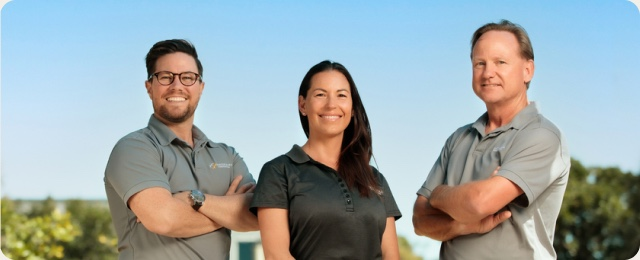
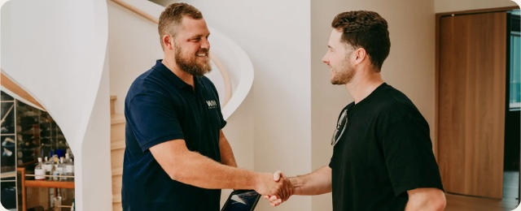
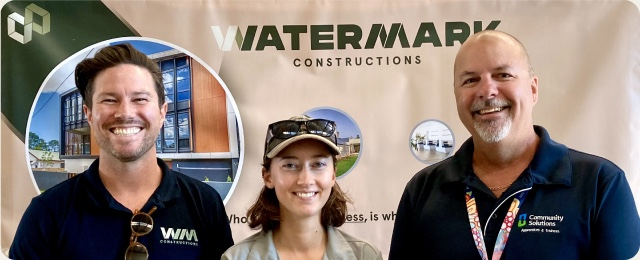
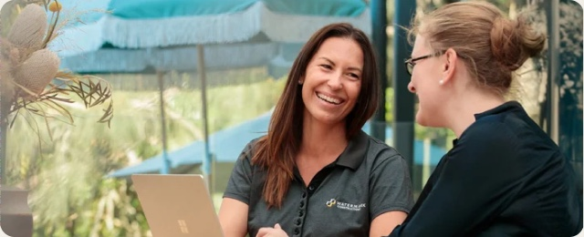

The principles that guideevery project.
Our values find their foundations in the hearts and minds of every member of the team. At Watermark Constructions, who we are as a business is who we are as people.

Integrity
We are in the practice of being honest, and of reflecting a consistent and uncompromising adherence to strong ethical principles and values.
Watermark Constructions team members have a strong sense of discipline, possess sound judgement, and are honest, dependable and loyal. Our wholeness of character means you can trust us to deliver only the best outcomes.

Excellence
Watermark Constructions distinguishes itself from other builders by insisting on only the best. The best products, the best people for the job, the best service and the very best outcomes.
Our commercial work is award winning and we are considered leaders in the insurance repair industry. We deliver remarkable projects.

Community and Environment
Our team is comprised of real diversity, in gender, culture, age and experience. The culmination of these strengths lets us reach every part of the communities we live in, and work in a harmonious and dignified way.
We respect the traditional owners of the land on which we live and work, and seek ways to promote and improve the sustainability and regenerative efforts of our environment and natural habitats.

Leadership
Born of a passion to innovate and implement best practice standards for the building industry, Watermark Constructions inspires its people to be remarkable. With ongoing training, support and mentorship, we build teams of experienced professionals who display vision, resilience, empathy and discipline.
Our strong industry affiliations keep us at the cutting edge of technology and innovation, so we can source and deliver the most relevant solutions in a rapidly changing environment.
"The team from Watermark needed to be people first and trade professionals second; leading with their hearts and creating expert solutions with their heads."Tropical Cyclone Debbie recovery, Whitsundays, 2017
Values in action.
We believe in giving back to the communities we serve, especially those directly affected by the events we rebuild after. We also commit funds and resources to prevention and resilience initiatives as communities prepare for future natural disasters.
Closer to home, our Managing Director Hew Williams sits on the Queensland Advisory Board of the Starlight Children's Foundation, and the whole team steps up each May for Starlight Super Steps.